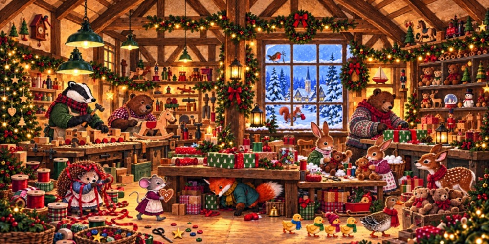
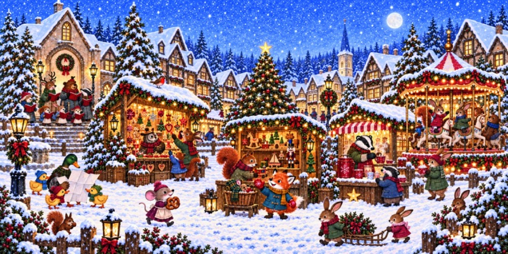
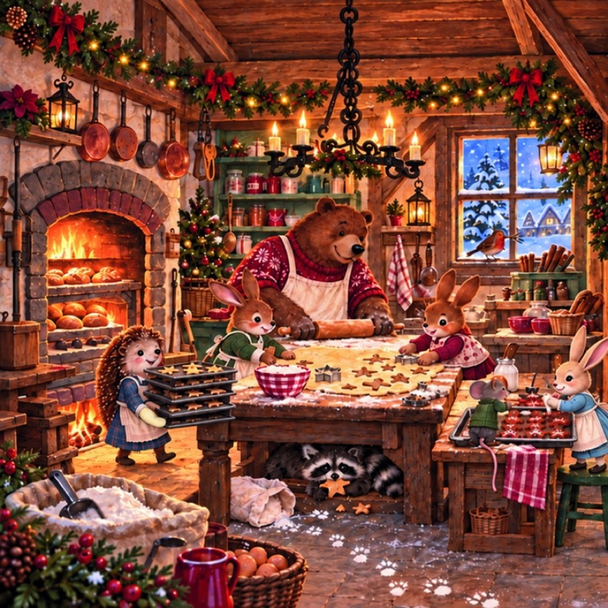
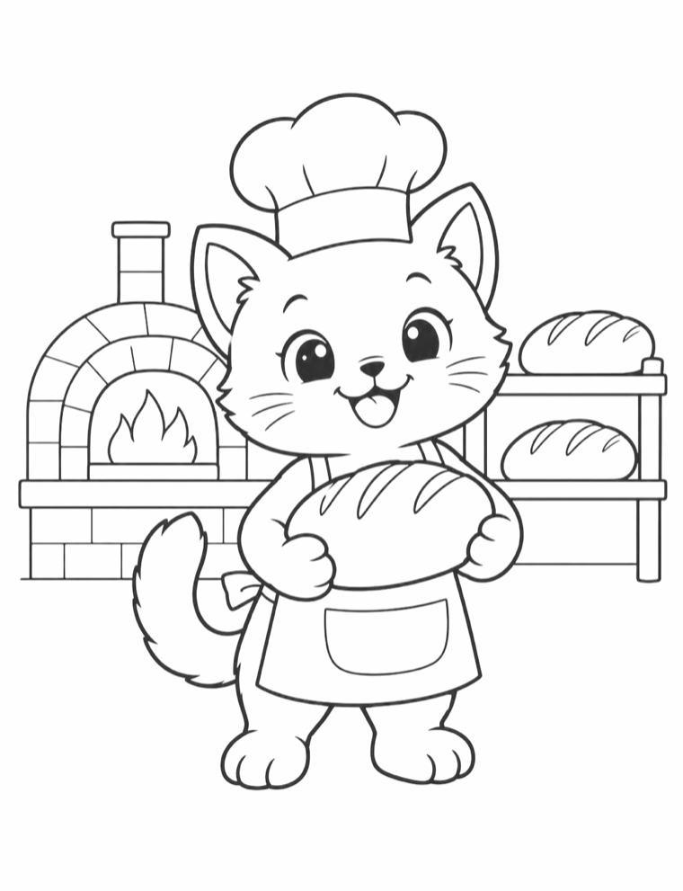
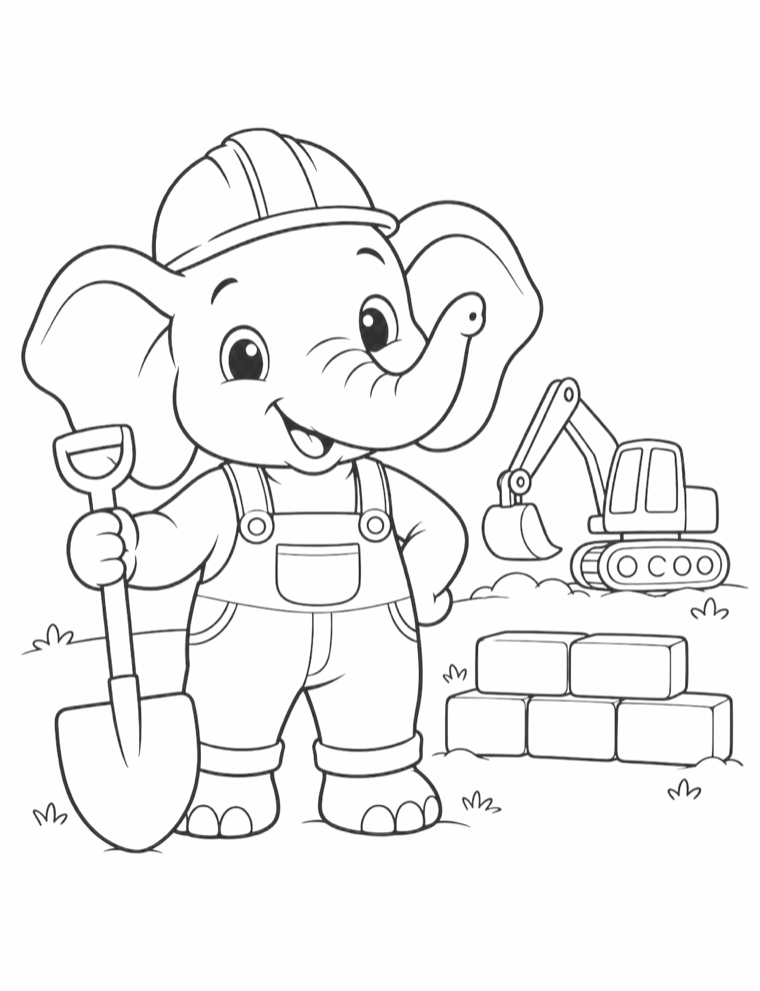
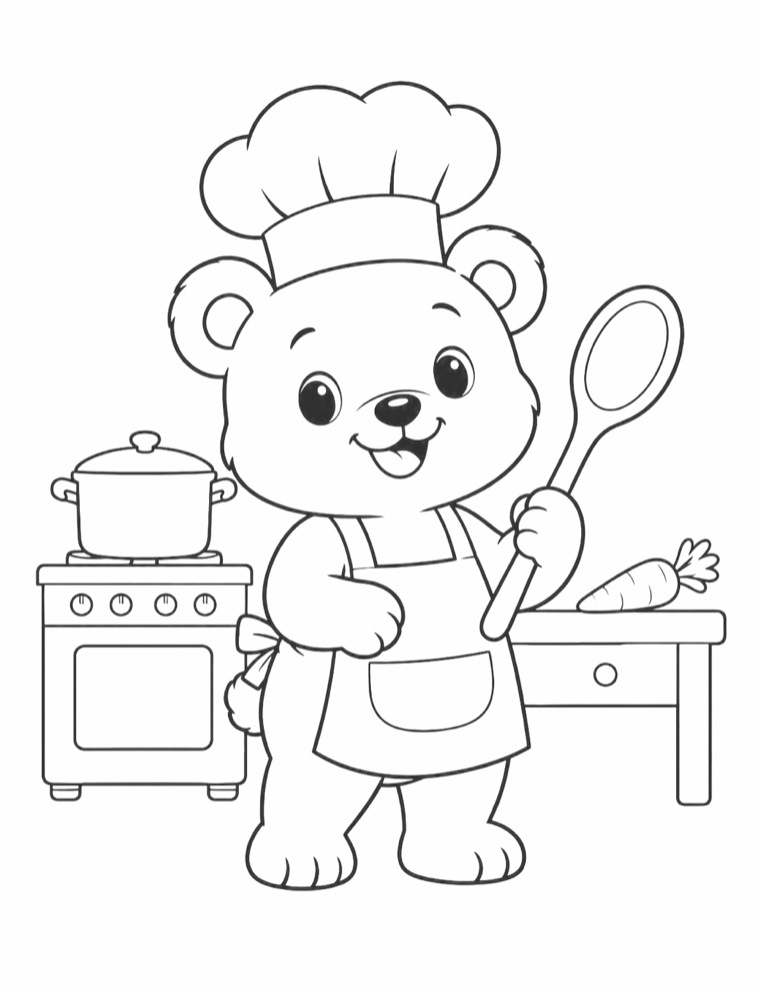

Zwei Bücher für Kinder
Bücher, die Kinder selbst entdecken
Ein Weihnachts-Wimmelbuch zum Suchen und Erzählen und ein Malbuch mit vierzig Berufen zum Ausmalen. Beide von Sebastian Mentzel, beide bei Amazon erhältlich — und beide so gemacht, dass Kinder damit allein etwas anfangen können.

Wimmelbuch · Entdecken, Suchen, Erzählen
Weihnachten im kleinen Walddorf
Mein Weihnachts-Wimmelbuch
Ein ganzes Dorf freut sich auf Weihnachten. In der Bäckerei duftet es nach Plätzchen, in der Werkstatt entstehen Geschenke, und auf dem Dorfplatz wartet ein großer Weihnachtsbaum. Acht winterliche Wimmelbilder voller kleiner Geschichten — mit Suchfragen auf jeder Seite und einer eigenen Malidee am Schluss.
- 8 Wimmelbilder
- 21,6 × 21,6 cm
- Mit Suchfragen
- Ab 2 Jahren
[Altersangabe prüfen: Die Rückseite nennt „ab 2 Jahren“, die Titelseite im Buch „ab 4 Jahren“. Bitte vereinheitlichen — hier, im Buch und bei Amazon.]
Drei Freunde führen durch das Dorf
Fips, der Fuchs
Am türkisfarbenen Mantel und am gelben Schal zu erkennen. Er läuft durch alle acht Bilder — und ist nicht immer leicht zu finden.
Milla, die Maus
Rotes Kleid, helle Schürze. Sie bringt gern etwas Leckeres mit, meistens frisch aus der Bäckerei.
Pip, das Rotkehlchen
Klein, mit roter Brust, und selten dort, wo man zuerst schaut. Auf jeder Doppelseite sitzt er woanders.
Vier von acht Bildern






Malbuch ab 4 Jahren
Tierkinder entdecken Berufe
Kleine Tiere, große Träume
Vierzig Ausmalbilder von Tierkindern in ihrem Traumberuf: die Katze als Bäckerin, der Elefant auf der Baustelle, der Tiger im Cockpit, der Affe als Astronaut. Große Flächen und kräftige Linien — gemacht für Hände, die das Ausmalen gerade erst lernen.
- 40 Ausmalbilder
- Ab 4 Jahren
- 21,6 × 27,9 cm
- Einseitig bedruckt
Große Flächen
Keine Schraffuren, keine Mini-Details. Die Formen sind so groß, dass der Stift auch dann im Feld bleibt, wenn die Hand noch wackelt.
Einseitig bedruckt
Jedes Motiv hat seine eigene Seite, die Rückseite bleibt leer. Drückt ein Filzstift durch, ist kein zweites Bild ruiniert.
Vierzig Berufe
Vom Bäcker über die Feuerwehr bis zur Raumfahrt. Jedes Bild zeigt einen Beruf mit seinem Werkzeug — und gibt beim Ausmalen etwas zu erzählen.
Sechs von vierzig Seiten






Für wen
Wann die Bücher gerade richtig sind
Beide beschäftigen Kinder ohne Bildschirm und ohne Anleitung — das Wimmelbuch im Sitzen zu zweit, das Malbuch auch allein.
- Adventszeit
- Nikolausstiefel
- Weihnachtsgeschenk
- Kindergeburtstag
- Mitbringsel
- Kita und Vorschule
- Lange Autofahrt
- Regennachmittag
Beide Bücher bringen Gespräche in Gang. Beim Wimmelbuch über das, was auf den Bildern passiert — beim Malbuch über die Frage, die auf der Rückseite steht: Was möchtest du einmal werden?

Über mich
Sebastian Mentzel
[Hier dein Text: Wer bist du, wie kam es zum ersten Buch, was magst du an der Arbeit daran? Zwei kurze Absätze reichen. Eltern kaufen eher, wenn hinter dem Buch eine Person steht statt einer Marke — konkret werden schlägt Lebenslauf.]
[Zweiter Absatz: Woher die Figuren stammen, wer gegenliest oder probemalt, was als Nächstes kommt.]
Häufige Fragen
Kurz beantwortet
Ab welchem Alter passen die Bücher?
Was ist eine Malidee im Wimmelbuch?
Drücken Filzstifte im Malbuch durch?
Gehören die Bücher zu einer Reihe?
Wo kann ich die Bücher kaufen?
Gibt es Mengenrabatt für Kitas?
Kontakt
Fragen, Rezensionsexemplare, Kita-Anfragen
Schreib einfach eine Mail.
post@kreativdschungel.de
[Richtige Adresse eintragen — hier und unten im Impressum.]